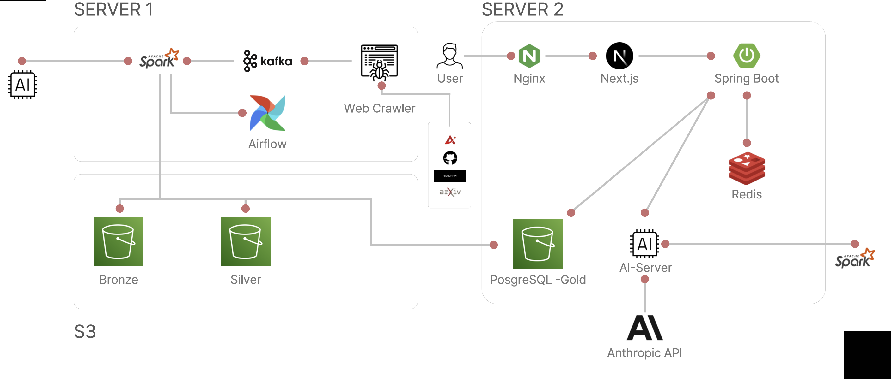

AiRadar
추천 서빙 API와 수집 파이프라인
논문과 뉴스를 수집해 Spark 메달리온 파이프라인과 Airflow DAG를 거쳐 추천 API로 제공하는 데이터 플랫폼입니다. 저는 추천 서빙 API와 그 앞단인 파이프라인, AI 서버를 맡았습니다.
크롤링, Trend 집계, 프론트, AI 서버의 직업 위험도 모듈은 다른 팀원 영역입니다. 컨테이너와 실행 환경 설정은 인프라 담당 팀원과 함께 다뤘습니다.

docs/diagrams/Architecture.png, 팀 공동 작성). 이 중 Spark와 Airflow 파이프라인, AI 서버, Spring Boot의 추천 서빙 부분이 제 담당입니다.파이프라인 단계별 날짜 기준 통일
문제
Bronze의 batch_date가 소스마다 달랐습니다(뉴스는 크롤링일, 논문은 published_at). Silver Job이 받는 --date는 Airflow ds여서 대상 파티션을 찾지 못했습니다. 그 결과는 실패가 아니라 Silver 처리 0건이었습니다.
해결
batch_date를 to_date(kafka_timestamp)(수신 시각) 기준으로 통일했습니다. 발행일 기준은 지연 도착분이 과거 파티션으로 흩어지고 DAG 실행일 기준은 수집 시각과 어긋납니다. 단계 간에 하나로 맞출 수 있는 값이 수신 시각이었습니다.
대가
지연 도착 중복을 받아들이고 anti-join 재처리를 함께 뒀습니다.
배운 점
단계마다 "날짜"의 정의가 다르면 실패가 아니라 0건으로 끝나 발견이 늦어집니다. Silver의 기본 --date는 여전히 ds이고 타임존 설정이 레포에 없어 자정 부근 불일치 가능성은 남아 있습니다.
Airflow 컨테이너 OOM 원인 분석
문제
단일 서버의 Airflow 컨테이너가 SparkSubmit driver를 직접 띄우는 구조(deploy-mode client)에서 컨테이너 메모리 한도를 넘겼습니다.
원인
가장 유력한 원인 후보를 추려 순서대로 검증했고, 커밋 순서가 검증 순서와 일치합니다. 동시 실행 제한, executor 축소를 거쳐, driver가 executor와 달리 Airflow 컨테이너 안에서 돈다는 점에 따라 컨테이너 mem_limit를 2g에서 6g로 올렸습니다. 이 과정에서 docker-compose 구성과 Spark·Airflow 컨테이너 설정을 인프라 담당 팀원과 함께 조정했습니다.
결과
이 상향 뒤에도 프로젝트 후반 ALS DAG에서 OOM이 다시 났고, driver 메모리를 줄이는 쪽으로 한 번 더 조정했습니다. 컨테이너 한도만으로 끝나는 문제가 아니었습니다.
배운 점
OOM은 컨테이너 한도 / JVM 힙 / 호스트 중 어느 경계에서 났는지 먼저 나눠야 한다는 것을 이 과정에서 확인했습니다. 그 구분 없이 executor부터 줄인 것이 두 번째 단계였습니다.
추천 캐시의 일관성 결함을 순서대로 고쳤습니다. 조회·북마크 뒤 캐시 무효화 누락과, 캐시 삭제 실패가 뒤의 처리까지 막던 문제를 먼저 분리했고, 남은 것은 계산 도중 캐시가 무효화되면 오래된 결과가 다시 저장되는 경합이었습니다.
프로파일 rev를 HINCRBY로 먼저 올린 뒤 캐시를 지우고 서빙이 저장 직전에 rev를 비교하게 했는데, 확인(GET)과 저장(SET)이 별개 왕복이라 그 사이가 그대로 경합 구간으로 남았습니다. 그래서 HGET rev 비교와 SET PX를 Lua 스크립트 하나로 묶어 원자화했습니다(단일 Redis 노드 전제라 Cluster에서는 해시 태그가 필요합니다).
검증은 실제 Redis에 붙는 통합 테스트 10개로 했습니다(Redis만 실물이고 PostgreSQL·리포지토리는 mock, 환경변수가 없으면 skip되는 조건부 테스트). 응답 시간이나 히트율 개선은 주장하지 않습니다. 다중 프로세스 수준의 경합은 아직 재현하지 못했습니다.
같은 기간에 추천 API 응답 시간의 성립 조건을 좁히려고 다시 측정했습니다.
| 경로 | p50 | 측정 위치 |
|---|---|---|
| 캐시 히트 | 0.45ms | 서버 내부 |
| 캐시 미스 | 5.14ms | 클라이언트, p95 7.06ms |
| 신규 사용자 폴백 | 약 13ms | 클라이언트, 캐시 저장 안 함 |
- 조건
- 로컬 Docker(앱·Redis·PostgreSQL 컨테이너), 합성 데이터 뉴스 2만 / 논문 5천 / 사용자 1천, size=20 응답 약 8KB, 3회 × 2,000요청의 중앙값, 오류 0/108,000. 서버 내부 지연은 Tomcat access log, 클라이언트 지연은 하니스 발송부터 응답 완료까지로 나눠 쟀습니다.
- 범위
- "50ms 이하"는 동시성 10 이하에서만 성립했습니다. 신규 사용자 폴백은 결과를 캐시에 저장하지 않아 매 요청 DB를 탑니다.
같은 실험에서 Redis를 완전히 정지시킨 상태도 시험했습니다. 이 상태에서는 추천 API가 클라이언트 타임아웃에 도달할 때까지 응답을 돌려주지 않았습니다(3회 호출 3회 모두 동일, 원인 미확인). 컨테이너 정지라는 한 가지 장애 형태만 본 것이고, Redis 장애를 받아내는 폴백 경로는 이번 재현 실험으로 확인한 추가 구현 과제입니다.